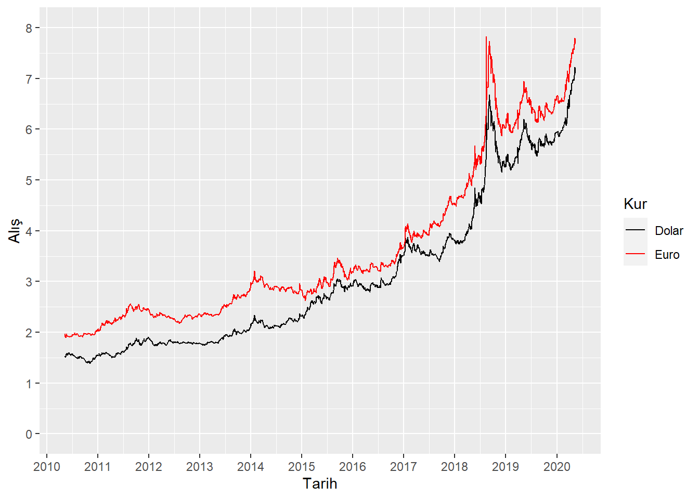
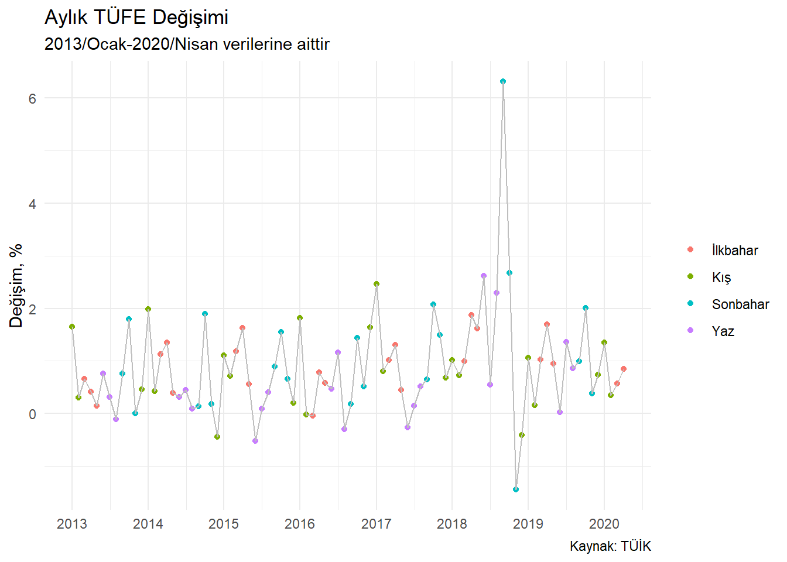
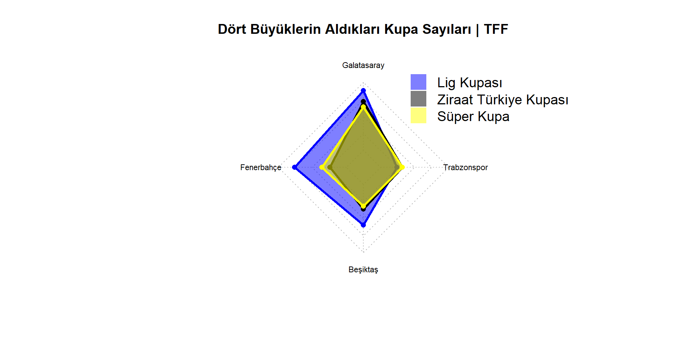
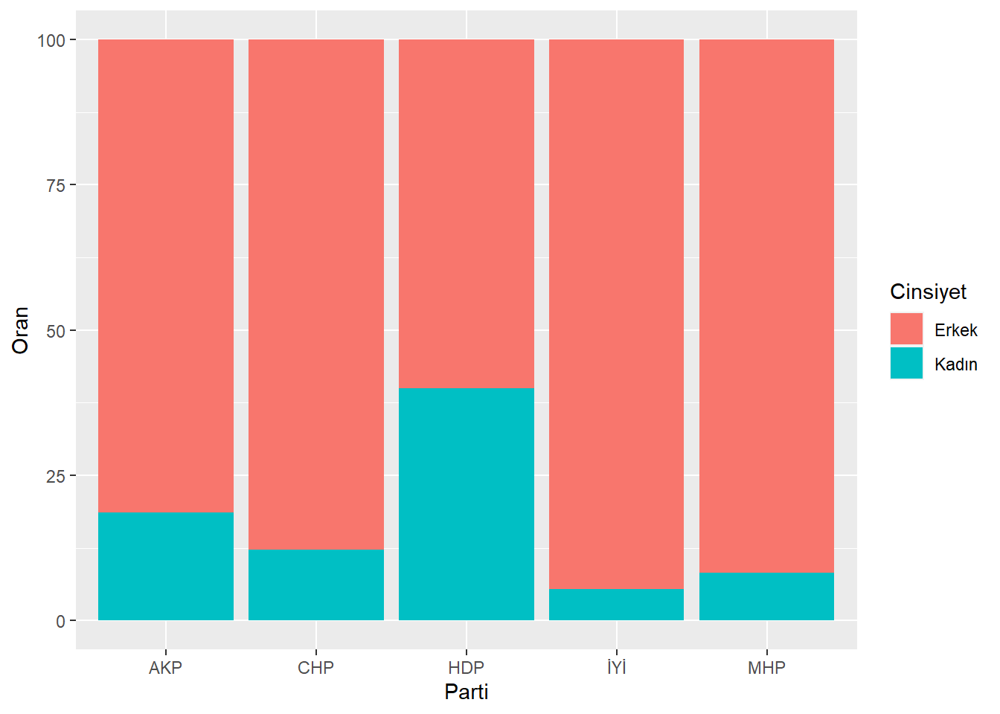

Bölüm 2 Grafikler
library(readxl);library(ggplot2);library(dplyr);library(tibble);library(magrittr);library(lubridate);library(scales);library(tidyquant);library(directlabels);library(fmsb)
setwd("C:/Users/datanerd/Desktop/Github/rViz/data")
g1_2 <- read_excel("g1_2.xlsx")
g1_3 <- read.csv("g1_3.csv")
g1_4 <- read_excel("g1_4.xlsx")
g1_5 <- read.csv("g1_5.csv")
g1_6 <- read_excel("g1_6.xlsx")
g1_7 <- read.csv("g1_7.csv")
g1_8 <- read.csv("g1_8.csv")
g1_9 <- read.csv("g1_9.csv")
g1_10 <- read_excel("g1_10.xlsx")
g1_11 <- read_excel("g1_11.xlsx")
g1_12 <- read_excel("g1_12.xlsx")
g1_13 <- read_excel("g1_13.xlsx")
g1_14 <- read_excel("g1_14.xlsx")2.1 Area (Alan)
2.2 Bar (Çubuk)
Bölgeler düzeyinde tiyatro seyirci sayısı:
#En basit şekilde
ggplot(data = g1_2) +
geom_bar(mapping = aes(x = `Bölge`, y = Tiyatro), stat = "identity")

x ekseninde yer alan bölge isimlerini küçültebiliriz.
y eksenine ait değerleri daha okunabilir bir formata getirebiliriz.
Çubukları büyükten küçüğe doğru sıralayabiliriz.
Çubukları renklendirebiliriz.
ggplot(data = g1_2) +
geom_col(mapping = aes(x = reorder(`Bölge`, -Tiyatro), y = Tiyatro, fill = `Bölge`)) +
theme(axis.text.x = element_text(size = 5)) +
scale_y_continuous(labels = comma)
Lejantı kaldırabiliriz.
x ve y eksenlerine ait başlıkları kaldırabiliriz.
Başlık, alt başlık ve kaynak ekleyebiliriz.
Temayı değiştirebiliriz.
ggplot(data = g1_2) +
geom_col(mapping = aes(x = reorder(`Bölge`, -`Tiyatro`), y = Tiyatro, fill = `Bölge`)) +
theme_minimal() +
scale_y_continuous(labels = comma) +
theme(axis.text.x = element_text(size = 6),
axis.title.x = element_blank(),
axis.title.y = element_blank(),
legend.position = "none") +
labs(x = NULL,
y = NULL,
title = "Bölgeler Düzeyinde Tiyatro Seyirci Sayısı",
subtitle = "2018 yılına ait verilerdir",
caption = "Kaynak: TÜİK")
- Çubukları yatay bir şekilde de gösterebiliriz.
ggplot(data = g1_2) +
geom_col(mapping = aes(x = reorder(`Bölge`, `Tiyatro`), y = Tiyatro, fill = `Bölge`)) +
theme_minimal() +
scale_y_continuous(labels = comma) +
theme(axis.title.x = element_blank(),
axis.title.y = element_blank(),
legend.position = "none") +
labs(x = NULL,
y = NULL,
title = "Bölgeler Düzeyinde Tiyatro Seyirci Sayısı",
subtitle = "2018 yılına ait verilerdir",
caption = "Kaynak: TÜİK") +
coord_flip()
2.3 Box and Whisker (Kutu-Bıyık)
Günlük BIST Hizmet, Mali, Sınai, Teknoloji endeks kapanışları:

y eksenine ait değerleri daha okunabilir bir formata getirebiliriz.
Kutuları renklendirebiliriz.
ggplot(data = g1_3) +
geom_boxplot(mapping = aes(x = Endeks, y = `Kapanış`, fill = Endeks)) +
scale_y_continuous(labels = comma) +
scale_fill_brewer(palette = "Set1")
Lejantı kaldırabiliriz.
x eksenine ait başlığı kaldırabiliriz.
Başlık, alt başlık ve kaynak ekleyebiliriz.
Temayı değiştirebiliriz.
ggplot(data = g1_3) +
geom_boxplot(mapping = aes(x = Endeks, y = `Kapanış`, fill = Endeks)) +
theme_minimal() +
scale_y_continuous(labels = comma) +
scale_fill_brewer(palette = "Set1") +
theme(legend.position = "none") +
labs(x = NULL,
title = "Günlük BIST Hizmet, Mali, Sınai, Teknoloji Endeks Kapanışları",
subtitle = "Son 1 yıla ait verilerdir",
caption = "Kaynak: TCMB")
2.4 Bubble (Balon)
İl ve ilçelere göre İnsani Gelişme Endeksi:
#En basit şekilde
ggplot(data = g1_4) +
geom_point(mapping = aes(x = `Nüfus`, y = Endeks, size = `Nüfus`))
İllere göre renklendirebiliriz.
Noktaları düzenleyebiliriz.
ggplot(data = g1_4) +
geom_point(mapping = aes(x = `Nüfus`, y = Endeks, size = `Nüfus`, fill = `İl`), alpha = 0.5, shape = 21) +
scale_color_viridis_d(option = "A")
Lejantı düzenleyebiliriz.
x ve y eksenlerine ait başlıkları düzeltebiliriz.
Başlık, alt başlık ve kaynak ekleyebiliriz.
Temayı değiştirebiliriz.
ggplot(data = g1_4) +
geom_point(mapping = aes(x = `Nüfus`, y = Endeks, size = `Nüfus`, fill = `İl`), alpha = 0.5, shape = 21) +
scale_fill_viridis_d() +
theme_minimal() +
theme(legend.title = element_blank()) +
labs(x = "Nüfus",
y = "İnsani Gelişme Endeksi",
title = "İl ve İlçelere Göre İnsani Gelişme Endeksi",
caption = "Kaynak: İnsani Gelişme Vakfı, TÜİK")
2.5 Candlestick (Mum)
BIST’e ait açılış, en yüksek, en düşük, kapanış değerleri:
g1_5 %<>%
mutate(Date = ymd(Date))
#Veriler aşağıdaki gibi de alınabilir:
#tq_get(x = "GARAN.IS", from = "2020-05-04", to = "2020-05-20")
#En basit şekilde
ggplot(data = g1_5, mapping = aes(x = Date, y = Close)) +
geom_candlestick(mapping = aes(open = Open, high = High, low = Low, close = Close))
- Düşüş ve yükseliş renklerini değiştirebiliriz.
ggplot(data = g1_5, mapping = aes(x = Date, y = Close)) +
geom_candlestick(mapping = aes(open = Open, high = High, low = Low, close = Close),
colour_up = "darkgreen", fill_up = "darkgreen",
colour_down = "darkred", fill_down = "darkred")
x ve y eksenlerine ait başlıkları kaldırabiliriz.
Başlık, alt başlık ve kaynak ekleyebiliriz.
Temayı değiştirebiliriz.
ggplot(data = g1_5, mapping = aes(x = Date, y = Close)) +
geom_candlestick(mapping = aes(open = Open, high = High, low = Low, close = Close),
colour_up = "darkgreen", fill_up = "darkgreen",
colour_down = "darkred", fill_down = "darkred") +
theme_tq() +
labs(x = NULL,
y = NULL,
title = "Garanti Bankası Açılış, En Yüksek, En Düşük, Kapanış Değerleri",
subtitle = "04.05.2020-20.05.2020",
caption = "Kaynak: Yahoo")
2.6 Density (Yoğunluk)
İstanbul Anadolu Yakası 1+1 kiralık daire fiyatları:

Renklendirme yapabiliriz.
y eksenine ait değerleri daha okunabilir bir formata getirebiliriz.
ggplot(data = g1_6, mapping = aes(x = Fiyat)) +
geom_density(fill = "red", color = "red", alpha = 0.5) +
scale_y_continuous(labels = comma)
x eksenine ait başlığı kaldırabilir; y eksenine ait başlığı düzenleyebiliriz.
Başlık ve kaynak ekleyebiliriz.
Temayı değiştirebiliriz.
ggplot(data = g1_6, mapping = aes(x = Fiyat)) +
geom_density(fill = "red", color = "red", alpha = 0.5) +
scale_y_continuous(labels = comma) +
theme_minimal() +
labs(x = NULL,
y = "Yoğunluk",
title = "İstanbul Anadolu Yakası'ndaki 1+1 Kiralık Daire Fiyatları",
caption = "Kaynak: Sahibinden")
2.7 Histogram
Günlük BIST Endeksi toplam işlem hacmi:

Aralık seçimini ayarlayabiliriz.
x eksenine ait değerleri daha okunabilir bir formata getirebiliriz.
Renklendirme yapabiliriz.
ggplot(data = g1_7) +
geom_histogram(mapping = aes(x = `ToplamİşlemHacmi`), binwidth = 500000, fill = "dark red") +
scale_x_continuous(labels = comma)
x eksenine ait başlığı kaldırabilir, y eksenine ait başlığı düzeltebiliriz.
Ortalama çizgisi (kesikli) ekleyebiliriz.
Başlık, alt başlık ve kaynak ekleyebiliriz.
Temayı değiştirebiliriz.
ggplot(data = g1_7) +
geom_histogram(mapping = aes(x = `ToplamİşlemHacmi`), binwidth = 500000, fill = "dark red") +
geom_vline(xintercept = mean(g1_7$`ToplamİşlemHacmi`), linetype = "dashed") +
theme_minimal() +
scale_x_continuous(labels = comma) +
labs(x = NULL,
y = "Sayma",
title = "Günlük BIST Endeksi Toplam İşlem Hacmi",
subtitle = "Son 10 yıla ait verilerdir",
caption = "Kaynak: TCMB")
2.8 Line (Çizgi)
Günlük Dolar ve Euro alış kuru:
g1_8 %<>%
mutate(Tarih = as.Date(Tarih))
#En basit şekilde
ggplot(data = g1_8) +
geom_line(mapping = aes(x = Tarih, y = `Alış`, group = Kur))
Renkleri değiştirebiliriz.
Kur tiplerini ayırabiliriz.
x eksenindeki tarihleri belli bir aralıkta gösterebiliriz.
y eksenindeki değerleri belli bir limit ve aralıkta gösterebiliriz.
ggplot(data = g1_8) +
geom_line(mapping = aes(x= Tarih, y = `Alış`, group = Kur, color = Kur)) +
scale_x_date(date_labels = "%Y", date_breaks = "year") +
scale_y_continuous(limits = c(0,8), breaks = seq(0,8,1)) +
scale_color_manual(values = c("black","red"))
- Her bir çizginin sonunda hangi kura ait olduğunu belirtebiliriz.
ggplot(data = g1_8, mapping = aes(x= Tarih, y = `Alış`, group = Kur, color = Kur)) +
geom_line() +
geom_dl(aes(label = Kur), method = list(dl.combine("last.points"), cex = 0.8)) +
scale_x_date(date_labels = "%Y", date_breaks = "year") +
scale_y_continuous(limits = c(0,8), breaks = seq(0,8,1)) +
scale_color_manual(values = c("black","red"))
Lejantı kaldırabiliriz.
x eksenine ait başlığı kaldırabilir; y eksenine ait başlığı düzeltebiliriz.
Başlık, alt başlık ve kaynak ekleyebiliriz.
Temayı değiştirebiliriz.
ggplot(data = g1_8, mapping = aes(x = Tarih, y = `Alış`, group = Kur, color = Kur)) +
geom_line() +
geom_dl(aes(label = Kur), method = list(dl.combine("last.points"), cex = 0.7)) +
theme_minimal() +
scale_x_date(date_labels = "%Y", date_breaks = "year") +
scale_y_continuous(limits = c(0,8), breaks = seq(0,8,1)) +
scale_color_manual(values = c("black","red")) +
theme(legend.position = "none") +
labs(x = NULL,
y = "Alış",
title = "Günlük Dolar ve Euro Alış Kuru",
subtitle = "Son 10 yıla ait verilerdir",
caption = "Kaynak: TCMB")
2.9 Multi-set Bar (Çoklu Çubuk)
Bölgeler düzeyinde tiyatro-sinema seyirci sayısı:
#En basit şekilde
ggplot(data = g1_9) +
geom_col(mapping = aes(x = `Bölge`, y = `Sayı`, fill = `Tip`), position = "dodge")
x ekseninde yer alan bölge isimlerini küçültebiliriz.
y eksenine ait değerleri daha okunabilir bir formata getirebiliriz.
Çubukları büyükten küçüğe doğru sıralayabiliriz.
Çubukları renklendirebiliriz.
ggplot(data = g1_9) +
geom_col(mapping = aes(x = reorder(`Bölge`, -`Sayı`), y = `Sayı`, fill = `Tip`), position = "dodge") +
theme(axis.text.x = element_text(size = 5)) +
scale_y_continuous(labels = comma) +
scale_fill_manual(values = c("red","blue"))
Lejantı kaldırabiliriz.
x ve y eksenlerine ait başlıkları kaldırabiliriz.
Başlık, alt başlık ve kaynak ekleyebiliriz.
Temayı değiştirebiliriz.
ggplot(data = g1_9) +
geom_col(mapping = aes(x = reorder(`Bölge`, -`Sayı`), y = `Sayı`, fill = `Tip`), position = "dodge") +
theme_minimal() +
scale_y_continuous(labels = comma) +
theme(axis.text.x = element_text(size = 6),
axis.title.x = element_blank(),
axis.title.y = element_blank(),
legend.position = "bottom",
legend.title = element_blank()) +
labs(title = "Bölgeler Düzeyinde Tiyatro ve Sinema Seyirci Sayısı",
subtitle = "2018 yılına ait verilerdir",
caption = "Kaynak: TÜİK") +
scale_fill_manual(values = c("red","blue"))
2.10 OHLC (Açılış-Yükseliş-Düşüş-Kapanış)
BIST’e ait açılış, en yüksek, en düşük, kapanış değerleri:
g1_5 %<>%
mutate(Date = ymd(Date))
#Veriler aşağıdaki gibi de alınabilir:
#tq_get(x = "GARAN.IS", from = "2020-05-04", to = "2020-05-20")
#En basit şekilde
ggplot(data = g1_5, mapping = aes(x = Date, y = Close)) +
geom_barchart(mapping = aes(open = Open, high = High, low = Low, close = Close))
Düşüş ve yükseliş renklerini değiştirebiliriz.
Kalınlığını ayarlayabiliriz.
ggplot(data = g1_5, mapping = aes(x = Date, y = Close)) +
geom_barchart(mapping = aes(open = Open, high = High, low = Low, close = Close),
colour_up = "darkgreen", colour_down = "darkred", size = 1)
x ve y eksenlerine ait başlıkları kaldırabiliriz.
Başlık, alt başlık ve kaynak ekleyebiliriz.
Temayı değiştirebiliriz.
ggplot(data = g1_5, mapping = aes(x = Date, y = Close)) +
geom_barchart(mapping = aes(open = Open, high = High, low = Low, close = Close),
colour_up = "darkgreen", colour_down = "darkred", size = 1) +
theme_tq() +
labs(x = NULL,
y = NULL,
title = "Garanti Bankası Açılış, En Yüksek, En Düşük, Kapanış Değerleri",
subtitle = "04.05.2020-20.05.2020",
caption = "Kaynak: Yahoo")
2.11 Population Pyramid (Nüfus Piramidi)
Türkiye nüfus piramidi:
#En basit şekilde
ggplot(data = g1_10,
mapping = aes(x = reorder(`Yaş Grubu`, `Sıralama`), fill = Cinsiyet,
y = ifelse(test = Cinsiyet == "Erkek", yes = -`Nüfus`, no = `Nüfus`))) +
geom_bar(stat = "identity") +
coord_flip()
x eksenindeki değerleri kaldırabiliriz.
Renkleri değiştirebiliriz.
ggplot(data = g1_10,
mapping = aes(x = reorder(`Yaş Grubu`, `Sıralama`), fill = Cinsiyet,
y = ifelse(test = Cinsiyet == "Erkek", yes = -`Nüfus`, no = `Nüfus`))) +
geom_bar(stat = "identity") +
scale_y_continuous(labels = abs, limits = max(g1_10$`Nüfus`) * c(-1,1)) +
theme(axis.text.x = element_blank()) +
scale_fill_brewer(palette = "Dark2") +
coord_flip()
Lejantı düzenleyebiliriz.
Başlık, alt başlık ve kaynak ekleyebiliriz.
Temayı değiştirebiliriz.
ggplot(data = g1_10,
mapping = aes(x = reorder(`Yaş Grubu`, `Sıralama`), fill = Cinsiyet,
y = ifelse(test = Cinsiyet == "Erkek", yes = -`Nüfus`, no = `Nüfus`))) +
geom_bar(stat = "identity") +
theme_minimal() +
scale_y_continuous(labels = abs, limits = max(g1_10$`Nüfus`) * c(-1,1)) +
labs(x = NULL,
y = NULL,
title = "Türkiye Nüfus Piramidi",
subtitle = "2019 yılı nüfus verileri",
caption = "Kaynak: TÜİK") +
theme(axis.text.x = element_blank(),
legend.title = element_blank()) +
scale_fill_brewer(palette = "Dark2") +
coord_flip()
2.12 Radar
Dört büyüklerin aldığı kupa sayıları:

- İki tane satır eklememiz gerekiyor. Bu satırlar değişken sayısı kadar olacak ve her biri için minimum ve maksimum (kupa) sayıları belirtecek.

- Çizgi ve alanları renklendirebiliriz.
cizgi <- c(alpha("blue", 1), alpha("black", 1), alpha("yellow", 1))
alan <- c(alpha("blue", 0.5), alpha("black", 0.5), alpha("yellow", 0.5))
radarchart(g1_11,
pcol = cizgi,
pfcol = alan)
Etiketleri düzeltebiliriz.
Çizgileri düzeltebiliriz.
cizgi_kalinligi <- 3
cizgi_tipi <- 1
cizgi_renk <- "gray"
etiket_buyuklugu <- 0.7
radarchart(g1_11,
pcol = cizgi,
pfcol = alan,
plwd = cizgi_kalinligi,
plty = cizgi_tipi,
cglcol = cizgi_renk,
vlcex = etiket_buyuklugu)
Lejant ekleyebiliriz.
Başlık ekleyebiliriz.
radarchart(g1_11,
pcol = cizgi,
pfcol = alan,
plwd = cizgi_kalinligi,
plty = cizgi_tipi,
cglcol = cizgi_renk,
vlcex = etiket_buyuklugu,
title = "Dört Büyüklerin Aldıkları Kupa Sayıları | TFF")
legend(x = 0.5,
y = 1.2,
legend = rownames(g1_11[-c(1,2),]),
pch = 15,
col = alan,
cex = 1.2,
pt.cex = 3,
bty = "n")
2.13 Scatter (Dağılım, Nokta, Saçılım)
Cari dönem enflasyon beklentisi ile gerçekleşen enflasyon:

- Mevsimlere göre renklendirebiliriz.
ggplot(data = g1_12) +
geom_point(mapping = aes(x = Beklenti, y = `Gerçek`, color = Mevsim)) +
scale_color_brewer(palette = "Set1")
Lejantı kaldırabiliriz.
Başlık, alt başlık ve kaynak ekleyebiliriz.
Temayı değiştirebiliriz.
ggplot(data = g1_12) +
geom_point(mapping = aes(x = Beklenti, y = `Gerçek`, color = Mevsim)) +
scale_color_brewer(palette = "Set1") +
theme_minimal() +
theme(legend.title = element_blank()) +
labs(title = "Cari Dönem Enflasyon Beklentisi-Gerçekleşen",
subtitle = "2013/Ocak-2020/Nisan verilerine aittir",
caption = "Kaynak: TCMB")
2.14 Stacked Area (Yığılı Alan)
Covid-19 vaka, iyileşen ve ölüm sayıları:
#En basit şekilde
g1_13$Grup <- factor(g1_13$Grup, levels = c("Vaka", "İyileşen", "Ölüm")) #Yapılacak sıralama önemlidir.
ggplot(data = g1_13) +
geom_area(mapping = aes(x = `Gün`, y = `Sayı`, fill = Grup))
y eksenine ait değerleri daha okunabilir bir formata getirebiliriz.
Renkleri değiştirebiliriz.
ggplot(data = g1_13) +
geom_area(mapping = aes(x = `Gün`, y = `Sayı`, fill = Grup)) +
scale_y_continuous(labels = comma) +
scale_fill_viridis_d()
Lejantı düzenleyebiliriz.
x ve y eksenlerine ait başlıkları kaldırabiliriz.
Başlık ve kaynak ekleyebiliriz.
Temayı değiştirebiliriz.
ggplot(data = g1_13) +
geom_area(mapping = aes(x = `Gün`, y = `Sayı`, fill = Grup)) +
scale_y_continuous(labels = comma) +
scale_fill_viridis_d() +
theme_minimal() +
theme(legend.position = "bottom",
legend.title = element_blank()) +
labs(x = NULL,
y = NULL,
title = "Türkiye Covid-19 Vaka, İyileşen, Ölüm Sayıları",
caption = "Kaynak: CSSEGISandData")
2.15 Stacked Bar (Yığılmış Çubuk)
Partilerin cinsiyete göre milletvekili sayısı:
#En basit şekilde
ggplot(g1_14) +
geom_bar(mapping = aes(x = Parti, y = `Sayı`, fill = Cinsiyet), position = "stack", stat = "identity")
#Alternatif olarak yüzde ile gösterilebilir.
g1_14 %<>%
group_by(Parti) %>%
mutate(Oran = round(`Sayı` / sum(`Sayı`) * 100, digits = 1))
ggplot(g1_14) +
geom_bar(mapping = aes(x = Parti, y = Oran, fill = Cinsiyet), position = "stack", stat = "identity")
Çubukların içine oranları yazabiliriz.
Renkleri değiştirebiliriz.
ggplot(g1_14, mapping = aes(x = Parti, y = Oran, fill = Cinsiyet)) +
geom_bar(stat = "identity") +
geom_text(mapping = aes(label = paste0("%",Oran)), position = position_stack(vjust = 0.5)) +
scale_fill_viridis_d()
x ve y eksenlerine ait başlıkları kaldırabiliriz.
y eksenindeki değerleri kaldırabiliriz.
Lejantı düzenleyebiliriz.
Başlık ve kaynak ekleyebiliriz.
Temayı değiştirebiliriz.
ggplot(g1_14, mapping = aes(x = Parti, y = Oran, fill = Cinsiyet)) +
geom_bar(stat = "identity") +
geom_text(mapping = aes(label = paste0("%",Oran)), position = position_stack(vjust = 0.5)) +
scale_fill_viridis_d() +
theme_minimal() +
theme(legend.title = element_blank(),
axis.text.y = element_blank()) +
labs(x = NULL,
y = NULL,
title = "TBMM Milletvekilleri Cinsiyete Göre Dağılım",
subtitle = "5 parti dahil edilmiştir",
caption = "Kaynak: TBMM")
2.16 Violin (Viyolonsel)
Günlük BIST Hizmet, Mali, Sınai, Teknoloji endeks kapanışları:

y eksenine ait değerleri daha okunabilir bir formata getirebiliriz.
Kutuları renklendirebiliriz.
ggplot(data = g1_3) +
geom_violin(mapping = aes(x = Endeks, y = `Kapanış`)) +
scale_y_continuous(labels = comma)
Lejantı kaldırabiliriz.
x eksenine ait başlığı kaldırabiliriz.
Başlık, alt başlık ve kaynak ekleyebiliriz.
Temayı değiştirebiliriz.
ggplot(data = g1_3) +
geom_violin(mapping = aes(x = Endeks, y = `Kapanış`, fill = Endeks)) +
scale_y_continuous(labels = comma) +
theme_minimal() +
theme(legend.position = "none") +
labs(x = NULL,
y = "Endeks Kapanışları",
title = "Günlük BIST Hizmet, Mali, Sınai, Teknoloji Endeks Kapanışları",
subtitle = "Son 1 yıla ait verilerdir",
caption = "Kaynak: TCMB") +
scale_fill_brewer(palette = "Set1")